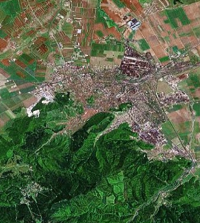
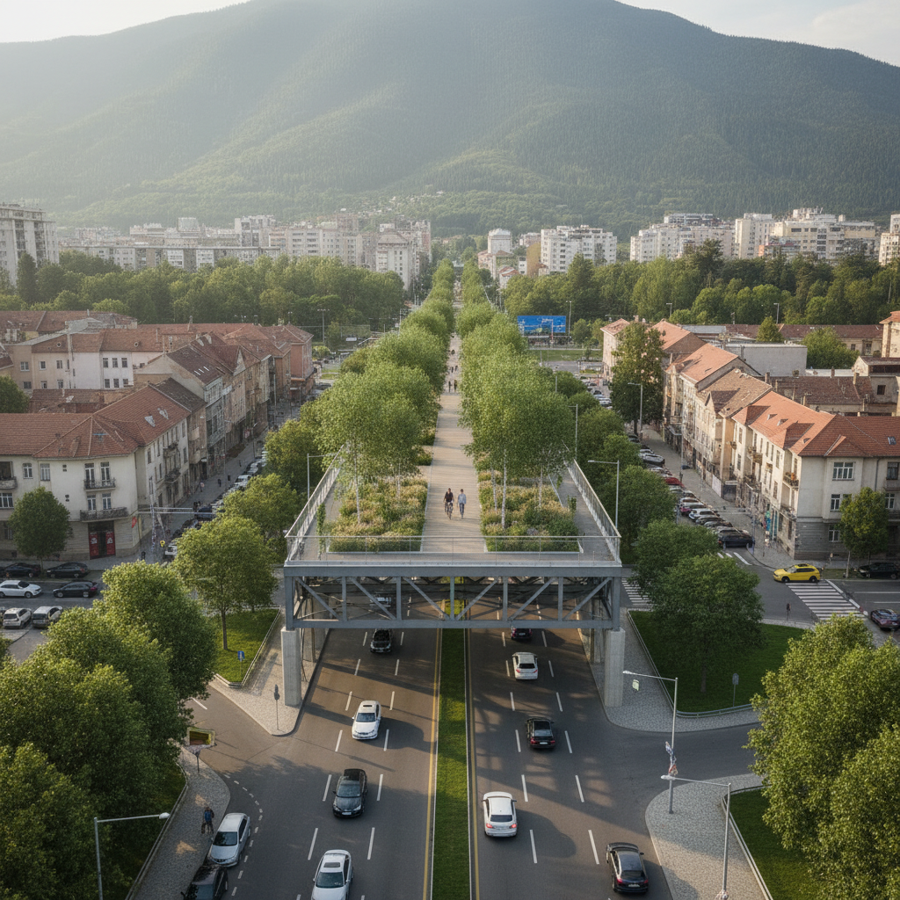

Copacii nu sunt peisagistică. Fiecare coridor verde dirijează aerul rece coborât de pe Tâmpa și Postăvarul spre centrul urban — o rețea de ventilație pasivă, calibrată la scara orașului.
Brașov · Coridorul Verde de Ventilație UrbanăO rețea de coridoare verzi care reconectează parcurile fragmentate ale Brașovului, canalizează aerul curat de pe Tâmpa și Postăvarul spre centrul urban și filtrează poluanții produși de trafic și industrie.
Brașovul este construit pe matricea unui oraș medieval – o formă de bazin înconjurat de munți care blochează circulația naturală a aerului și concentrează poluanții în interiorul orașului.
Un studiu peer-reviewed din 2023 (Heliyon / ScienceDirect) care a monitorizat Brașovul din 2010 până în 2022 a concluzionat că traficul vehiculelor este principala sursă de poluare. Circa 79% din autovehicule în România depășesc 11 ani vechime, producând de zeci de ori mai mulți poluanți decât valorile nominale Euro.
Structura medievală a centrului creează „canion urban": aerul circulă greu între clădiri, poluanții stagnează. Munții Tâmpa și Postăvarul înconjoară orașul și blochează disiparea naturală a poluanților în atmosferă. Brașovul este, literalmente, un bol în care se adună aerul murdar.
Parcul Titulescu (centru), Parcul Tractorul (~40 ha, nord-est), Parcul Noua și Zoo (sud-est) sunt spații verzi de calitate, dar complet izolate între ele de artere mari și blocuri. Fauna polenizatoare – albine, fluturi, lilieci – nu se poate deplasa între aceste insule biologice.
Brașovul este primul municipiu din România care a trecut la 100% energie verde pentru consumul public (2022). Planul de Acțiune pentru Energie Durabilă și Climă (PAED) al orașului oferă cadrul instituțional și financiar favorabil acestui tip de proiect.
BioAir Brașov propune crearea unei rețele de coridoare verzi liniare – de-a lungul bulevardelor principale și, într-o etapă ulterioară, pe structuri supraînălțate deasupra arterelor aglomerate – care conectează parcurile existente într-o rețea biologică unică.
„Un coridor verde nu este o stradă cu copaci. Este o rută de respirație pentru întreg ecosistemul urban – și pentru locuitorii lui."
— Principiu de proiectare, adaptat după Stuttgart Climate AtlasCoridoarele sunt orientate pe direcțiile dominante de vânt local, canalizând activ aerul rece coborât de pe Tâmpa și Postăvarul spre zona centrală. Modelul de referință este Stuttgart (Germania), unde o rețea similară a protejat 39% din suprafața urbană – un proces început în 1970 și validat printr-un Atlas Climatic dedicat în 2008.
Spre deosebire de Stuttgart, Brașovul are un avantaj natural excepțional: munții din imediata vecinătate produc continuu aer curat și răcoros. Coridoarele BioAir nu generează mișcarea aerului – o captează și o dirijează acolo unde este nevoie.
Proiectul nu pornește de la zero. Infrastructura verde existentă a Brașovului oferă o bază solidă – BioAir o completează și o conectează.
Parcuri mari de calitateParcul Titulescu (centru), Parcul Tractorul (~40 ha), Grădina Zoo și pădurea Noua (sud-est). Acestea sunt nodurile rețelei – există, sunt bine întreținute, nu se construiesc de la zero.
Tâmpa și Postăvarul – rezervoare de aerMasivele muntoase produc continuu curenții descendenți de aer răcoros și curat. Acest „motor natural" face proiectul mai eficient cu mai puțină infrastructură decât în orașele de câmpie.
Aliniamente de arbori pe bulevardeBulevardul Eroilor și alte artere principale au deja arbori plantați pe margini. BioAir nu îi înlocuiește – le adaugă un al doilea strat și le conectează.
Voință politică documentatăBrașovul este declarat „Capitala Verde a României" și are deja 100% energie verde pentru consumul public. PAED-ul orașului oferă cadrul instituțional pentru finanțare.
Conectivitate liniară între parcuriTronsoanele de bulevard între parcuri (400–900m) primesc un al doilea rând de arbori, arbuști filtranți și plante de acoperire. Nu se demolează nimic – se adaugă în spațiile publice existente.
Orientare științifică pe direcția vântuluiCoridoarele sunt selectate și orientate după direcția dominantă a vântului local, determinate printr-un studiu meteorologic, pentru a amplifica curenții naturali de la munte spre oraș.
„Podul Viu" – coridor supraînălțat pilotO structură modulară ușoară (oțel + substrat vegetal) deasupra unui bulevard, 50–80m. Precedente similare: Singapore (Park Connector Network) și Paris (Promenade Plantée). Conceptul este prezentat detaliat în secțiunea dedicată.
Coridoarele la sol sunt realizabile cu tehnologie standard de peisagistică urbană, la costuri comparabile cu reabilitarea unui trotuar, fără modificări ale structurii străzilor.
Pozitionarea parcurilor existente și a coridoarelor propuse, reprezentată schematic pe geometria reală a orașului.

Primul sistem din România care conectează parcuri fragmentate într-o rețea biologică funcțională, permițând deplasarea faunei polenizatoare prin interiorul orașului.
Coridoarele sunt orientate pe direcțiile de vânt, canalizând aerul curat de pe masivele muntoase spre centrul urban – avantaj natural absent în orașele de câmpie.
Arbori înalți (PM2.5), arbuști (NO₂, umbrire), plante de acoperire (umidificare). Sistem superior unei simple perdele de copaci prin diversitate funcțională.
Un coridor supraînălțat vizitabil transformă infrastructura utilitară într-o atracție publică unică, creând identitate urbană și vizibilitate pentru întreg proiectul.
Senzori IoT la intrarea și ieșirea coridoarelor măsoară impactul real în timp real. Datele sunt publice – bază pentru extindere și cercetare academică.
Metodologia BioAir poate fi aplicată în orice oraș românesc cu spații verzi fragmentate. Brașovul devine prototipul național pentru infrastructura verde urbană.

O structură modulară supraînălțată deasupra unui bulevard urban, acoperită cu vegetație funcțională pe trei straturi biologice. Primul pod viu din România — 60 de metri de coridoare biologice active care transformă infrastructura în ecosistem.
Coridor pilot Tâmpa → Parc Titulescu. Plantări profesionale (carpen, tei argintiu, plop tremurător), senzori de calitate a aerului, studiu de vânt. Cost estimat: 150.000–250.000 EUR.
Extindere rețea pe coridoarele principale + Podul Viu pilot (60 m, structură modulară supraînălțată cu vegetație integrată). Extindere rețea senzori. Lansare platformă publică de date. Cost estimat: 1,5–2,5 milioane EUR.
Conectarea integrală: Tâmpa – centru – Tractorul – Noua/Zoo. Elaborarea unui Atlas Climatic Local (model Stuttgart) care să ghideze planificările urbane viitoare ale Brașovului.
* Estimări bazate pe studii peer-reviewed internaționale (ScienceDirect, PMC, EBRD GreenCities). Valorile precise necesită modelare CFD locală realizată în Faza 1.
| Faza | Descriere | Estimare (EUR) |
|---|---|---|
| Faza I · 0–12 luni | Coridor pilot Tâmpa → Parc Titulescu. Plantări profesionale (carpen, tei argintiu, plop tremurător), senzori de calitate a aerului, studiu de vânt. | 150.000–250.000 |
| Faza II · 1–3 ani | Extindere rețea pe coridoarele principale + Podul Viu pilot (60 m, structură modulară supraînălțată cu vegetație integrată). | 1,5–2,5 milioane |
| Faza III · 3–7 ani | Rețea completă (12–15 km coridoare), Atlas Climatic Local publicat, sistem de monitorizare extins. | 5–10 milioane |
| TOTAL proiect integral | ~6,6–12,8 milioane EUR | |
Cifrele sunt estimări preliminare bazate pe costuri reale ale proiectelor europene similare (Seoul Skygarden, Highline NYC, coridoare verzi în Copenhaga și Viena) și pe prețurile pieței românești pentru plantări urbane profesionale (150–400 EUR per copac matur, inclusiv groapă, substrat, tutore și garanție). Studiul de fezabilitate detaliat va valida cifrele finale.
Co-finanțare municipalăPrimăria Brașov, în cadrul Planului de Acțiune pentru Energie Durabilă și Climă (PAED).
Fonduri europene – programul LIFEGranturi 1–10 milioane EUR pentru proiecte de mediu; programe sub Green Deal și fonduri PNRR pentru tranziție verde.
Parteneriate privateCompanii cu obiective ESG, sponsorizări corporative din turism, imobiliare și tehnologie.
Toate datele utilizate provin din surse verificabile: studii peer-reviewed, agenții europene oficiale, date de monitorizare ANPM. Estimările de impact sunt marcate explicit și necesită modelare locală pentru confirmare precisă. Hărțile sunt schematice, bazate pe geometria reală a orașului, nu pe GIS oficial.
BioAir nu este o idee abstractă. Este un plan fezabil, fundamentat științific, inspirat din decenii de practică europeană și adaptat la realitatea Brașovului. Primul pas este un coridor pilot de 900m.